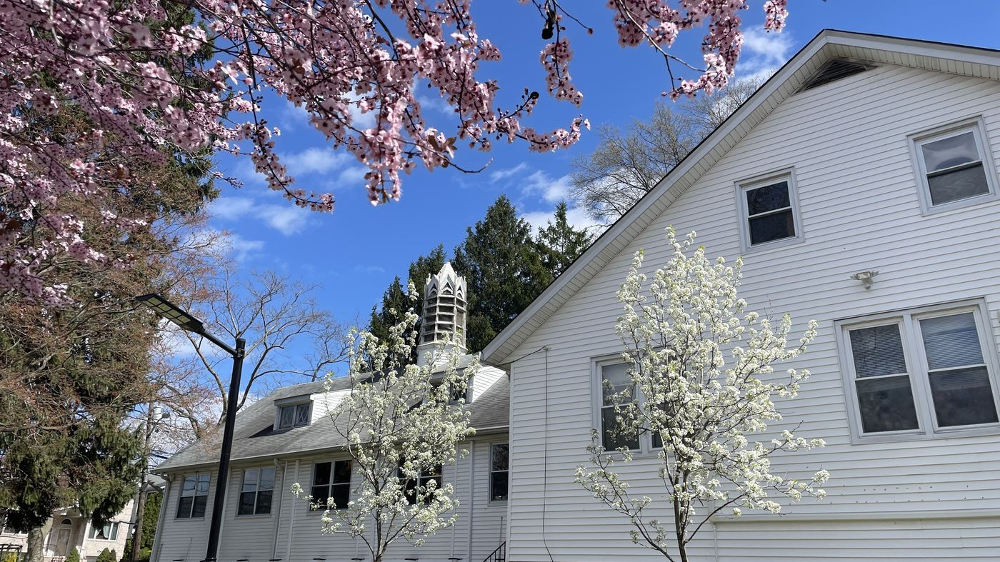
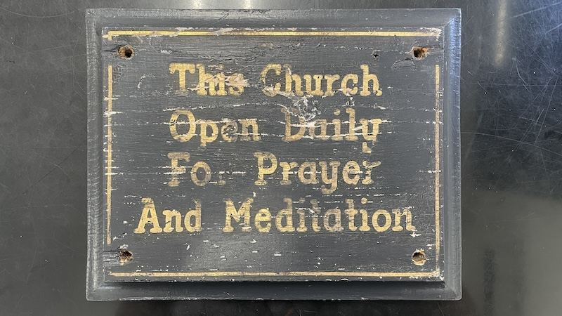

Fundraising Pitch
The case for renewing our sacred home — and how you can help.
About
First Presbyterian Church Palisades Park and Touch Community Christian Center. Centennial brief historical timeline, 1909 to now. Address: 50 West Palisades Blvd., Palisades Park, NJ 07650.

On December 14, 1896, residents of Palisades Park gathered at the home of the town’s first mayor, John S. Edsall, to establish the Union Association and found Union Chapel, with 43 initial members. John and Henry Brinkerhoff donated land at 219 Grand Avenue. The Women’s Aid Society, founded January 5, 1897 by Mrs. Paul Gantert with Mrs. John Edsall as president, raised funds for construction. The contract was signed October 21, 1897 for $1,620. Groundbreaking was November 28; the chapel was dedicated March 6, 1898.
Between February and April 1909 the congregation voted to join the Presbyterian denomination and became First Presbyterian Church. From 1911 to 1912 the Women’s Aid Society raised $1,600 for a lot at Palisades Boulevard and Hillside Avenue. Samuel S. Edsall’s 1911 will began “In the name of God, Amen,” and gave $2,000 to the church and $2,000 to the borough for the poor. The new church was dedicated March 19, 1916. A manse followed in 1921–22. Membership reached 282 at its 1930 peak.
Under Rev. Janvier J. Louderbough the roof was repaired and the Edsall family gave a Meneely commemorative bell tower in memory of Samuel, Isabella Christie, John S., and Samuel S. Edsall. Mrs. A.W. Knapp funded the first organ in 1942. Elder Frank Wheeler, ordained in 1909, kept the books and Sunday School for about forty years. Architect Carl Mattberg volunteered the 1957 expansion design. A $25,000 loan in 1958 finished classrooms, the pastor’s study, and fellowship hall for the 50th anniversary in 1959. The fireplace became the “Altar of Beautiful Ashes”; Brinkerhoff chairs remain in the sanctuary.
After lean years, 23 Taiwanese members joined in 1983. On May 25 the first bilingual worship was held. Pastor Chu-Yih Huang, led to the unused Presbyterian building on a weekday walk, was welcomed by Elder Mike Kelly. Rev. William A. Carhart (1983–1986) stabilized the church and raised $9,000 for a second organ in 1984.
A mission study (1999–2001) launched English worship in 2001, then Mandarin, Korean, and Spanish services. In 2005 the church founded Touch Community Christian Center (TCCC). By 2008 TCCC had served over 200 families; VBS had grown from one week of morning sessions to six full weeks; an annual charity concert began on the first Saturday of December; and short-term mission teams went yearly to sister churches in Taiwan. Ten percent of tithes go to outside missions.

Our church has a dream. With the gifts of multiple languages God gives us, we will spearhead a community church by reaching out to the un-churched in and beyond the community and build up a core of committed disciples of Jesus Christ.
We infuse evangelical zeal and rely on the Holy Spirit so people can grow into spiritual maturity and use the gifts God gave them. With the Spirit’s empowering, Christians can work as one team, one family, and one body of Christ for the glorification of God.
It is our mission to offer this church as a refuge where people find joy, peace, love, and spiritual healing through prayer and meditation — and to proclaim the love of Jesus Christ by bringing the gospel and serving spiritual and social needs.

Watch
Three short films from AppChurch Global: the case for renewing our campus, the history of our congregation, and black-and-white footage from the church archive.
The case for renewing our sacred home — and how you can help.

From 1896 to today: the story of our congregation.

Black-and-white film from the church archive.
This website is an in-kind donation of Dr. Wallace Lynch and AppChurch Global Foundation.